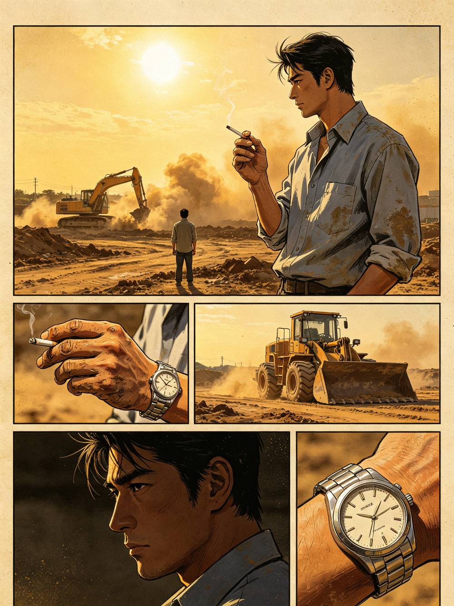
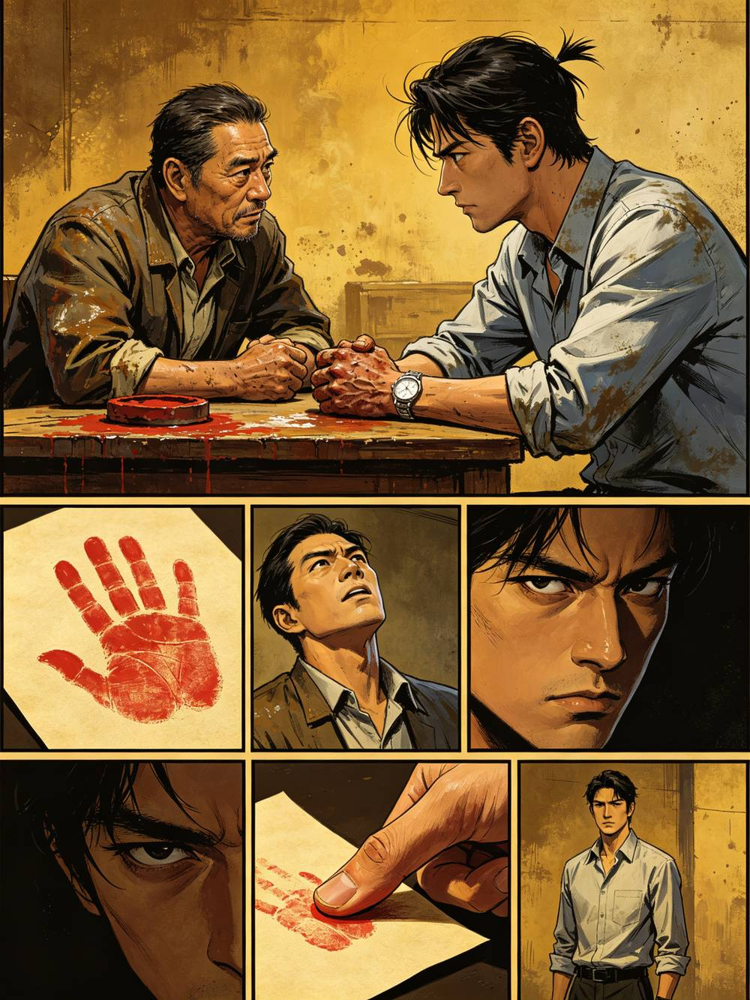
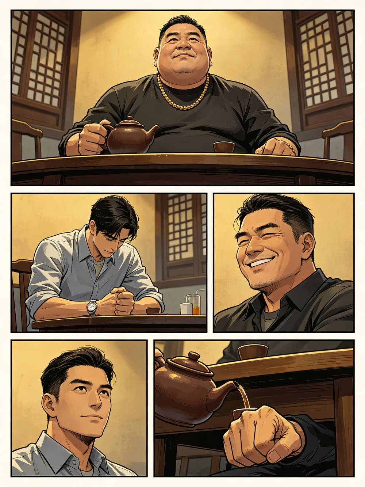
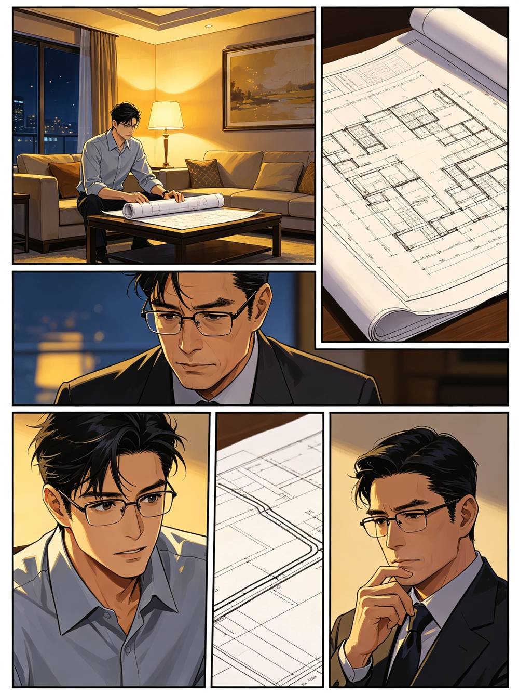
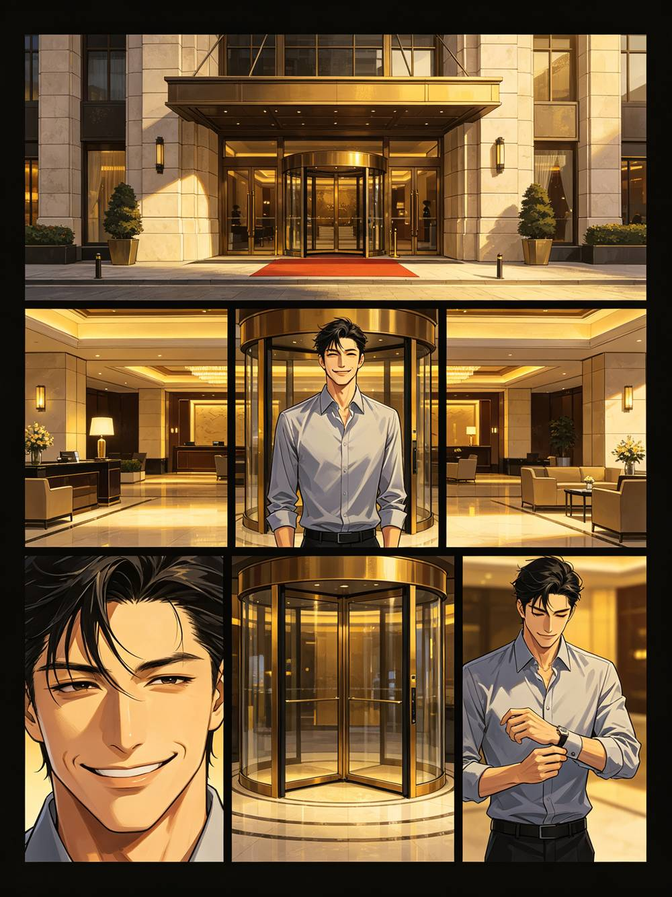
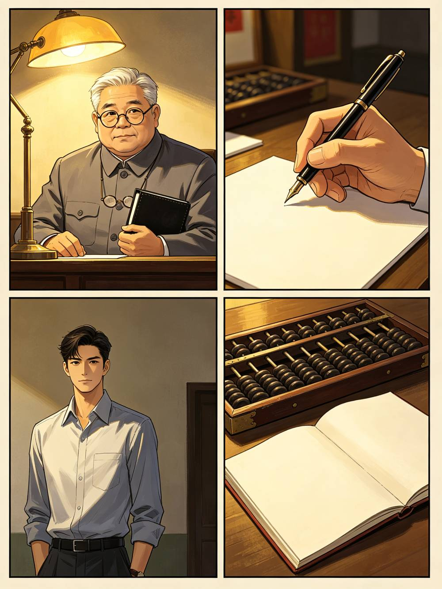
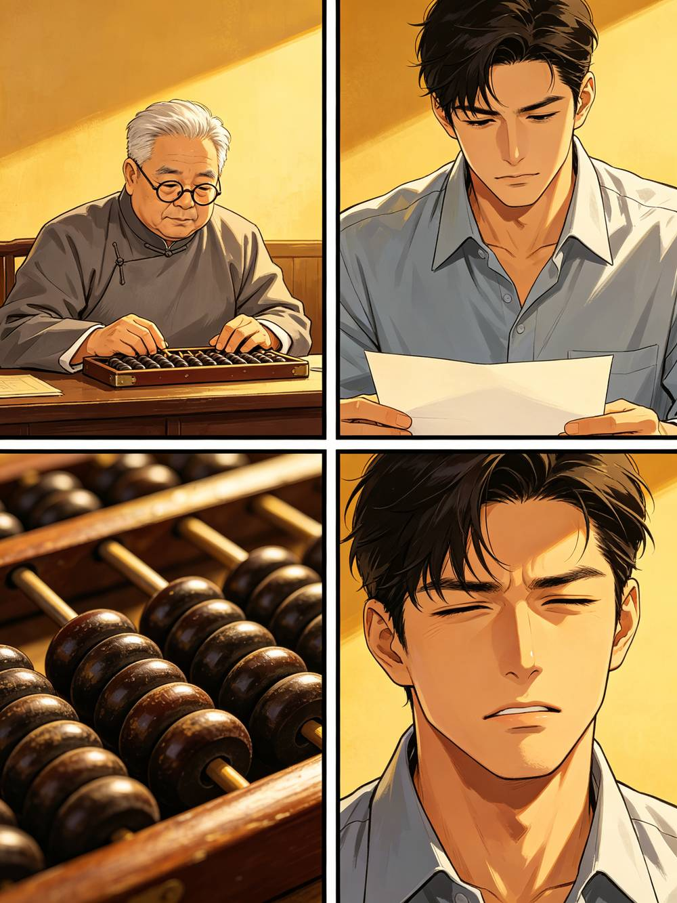
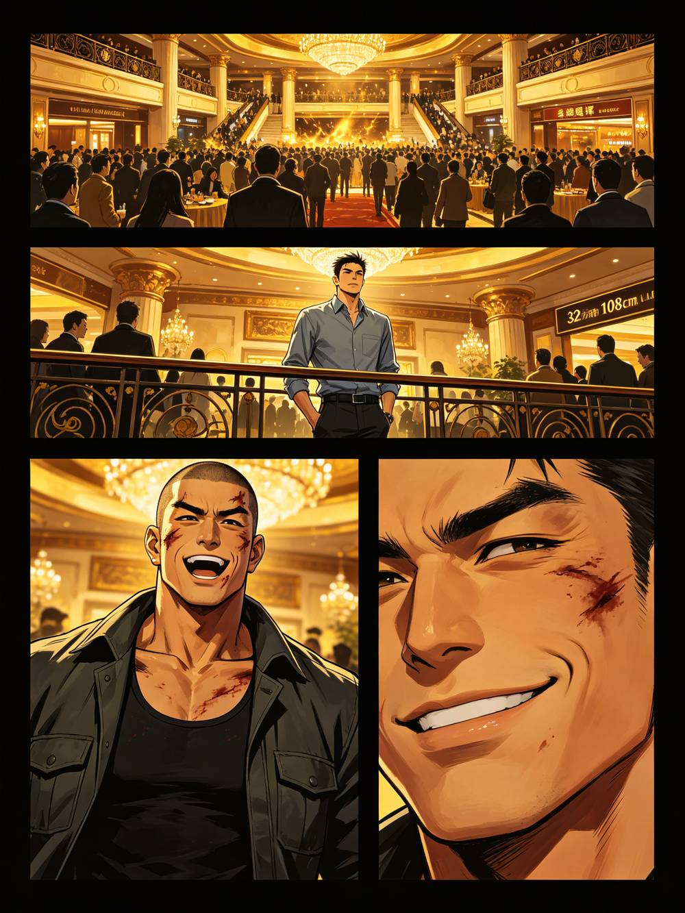
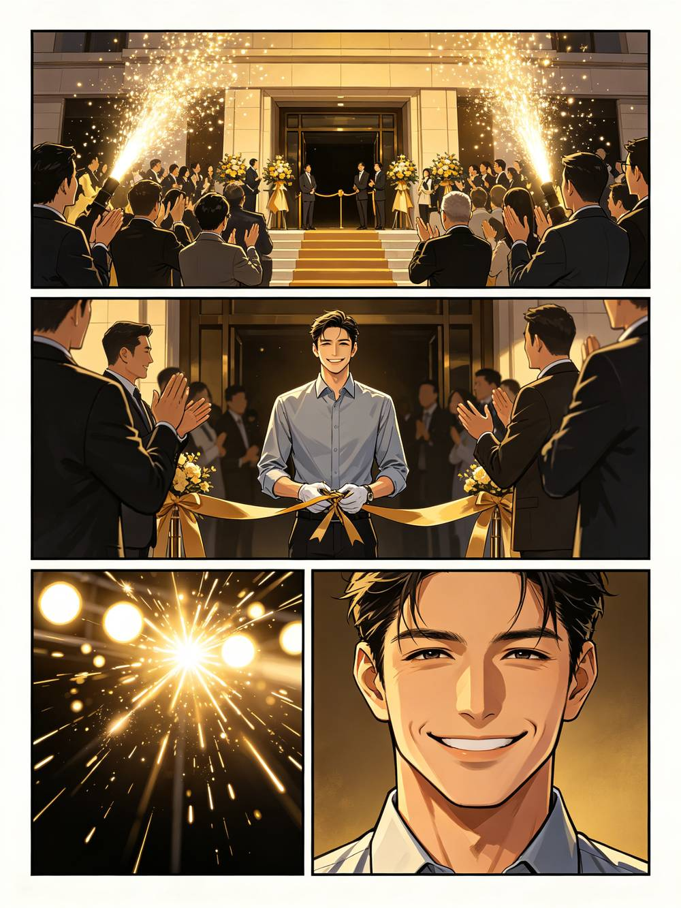

一九九五年。黄江镇，沿江路。这里将立起一栋楼——后来，人们叫它太子酒店。而此刻，它只是一片被推土机翻开的荒土。
轰——隆——
1

第一年，他把命押在这片荒土上。后来他总说，那年的饺子，是这辈子最好吃的一顿。
啪——
2

求人回来的路上，他在江边吐了。屈辱，比饥饿更难咽。
7

路批下来了。代价，是一笔没有名字的钱。
梁曜辉
这是我画的改路方案。我只会给黄江修一条能发财的路。
哗——
11

太子酒店，开业了。没有剪彩，没有鞭炮。来的客人，比预想中少一半。
呲——
21

梁曜辉
我不画饼。酒店现在不赚钱，但我不欠你们一分钱工资。要走，我不拦；要留，我当兄弟。
25

千禧年来了。珠三角的客商潮，把太子酒店推上了第一波风口。
啪嗒啪嗒
31

他第一次坐进更高的饭局。桌上的人，一句话就是一条路。
铃铃铃
41

2003 年秋。太子酒店扩建。白天，他是镇上的'优秀民营企业家'。
咔哒
46
二〇〇四年。六楼正式营业。梁曜辉给它起了个名字——'内务部'。
咔嚓
52
梁曜辉
我这人不怕人学，怕人学歪了砸招牌。要学，就按我的规矩学。
60
太子酒店的名声，传遍了珠三角。
梁曜辉
你今天砸我场子，明天全镇都知道我软。你要的不是钱，是面子——我给你面子，你给我的场子留面子。
铃铃铃
62
他捐学校、修路、资助贫困生。媒体报道他'草根企业家反哺家乡'。
梁曜辉
我不是来讨债的，是来帮你善后的。钱还了，路还在。
沙——
72
他获评市级优秀企业家。掌声雷动，像一场盛大的加冕。
老领导，握手
年轻人，名是双刃剑。别让名把你架起来。
77
运营总监
建议裁掉一批跟不上时代的老员工。第一个，是锅炉房的老周。
80
太子酒店，成了黄江的地标。外地老板到莞城，不住太子酒店，都不好意思说来过。
叮——
82
梁曜辉
留着。比清掉有用。他传的每句话，都是我递出去的刀。
86
一档港剧来太子酒店取景。梁曜辉亲自接待，全楼上下一片喜气。
导演
这条走廊，灯光再压一点！要那种……说不清道不明的感觉。
咔哒
87
二〇一〇年前后，太子酒店达到巅峰。梁曜辉办了场盛大的十年庆典。
92
林晚逐渐学会'看'。看有钱人一掷千金，看技师笑脸背后，看员工互相倾轧。
赵小曼
妹妹，别学我。我走这条路，是因为没得选；你有得选，就赶紧走。
沙沙
97
酒店内部形成两派：职业派的运营总监，元老派的阿龙。
102
他站在七楼，下面所有人都在向他伸手。没人问他，累不累。
103
阿龙，醉
哥，这酒店是我用命护出来的。我说几句话，不过分吧？
109
无数追梦女孩涌入莞城，涌入太子酒店。有人暴富，有人堕落，有人破碎。
同乡
我上去，是为了给家里盖楼。你笑我脏，可你没穷过。
嘟——
112
二〇一〇年冬。太子酒店年度答谢晚宴。梁曜辉意气风发，站在舞台中央。
咔嚓
117
梁曜辉
最近不太平。各部门把台账做漂亮，不该出现的，一律不要出现。
125
陈叔
老话讲，鸡蛋别放一个篮子。这二十年，我给你另放了一篮子。
陈叔
别问。知道的人越少，越安全。真到了那天，会有人找你。
127
赵小曼，视频里
妹妹，如果有一天有人来找你，把这东西交给他。就当……我给自己留条后路。
131
梁曜辉
阿龙，六楼的事，你先扛。你进去，我保你全家，出来后给你养老。
143
阿龙，站起身，眼眶红了
梁曜辉。我这条命，给你挡过刀。你现在让我替你挡官司。
144
陈叔，转身走
……那本账，我藏好了。但藏得好不好，看你有没有命等到那天。
147
陈叔
知道太多的人，走不出这座城。你手里那个手机，能保你的命，也能要你的命。
156
陈叔
这些，本来该烂在我肚子里。但梁曜辉已经护不住你了。你带着它走。
157
郑老板的人
梁曜辉的旧表。他当年最穷的时候，就剩这块表。你猜，他为了这块表，干过什么？
郑老板的人，叙述
他以为自己是靠本事起家的。其实第一桶金，就是替人平事的钱。
165
郑老板的人
这带子，当年落到陈叔手里。他以为是垃圾，收起来了。现在，它在我们手里。
166
郑老板的人
不是我们要干什么。是你手里的东西，加上我们手里的东西，能决定梁曜辉死，还是活。
郑老板的人
把你从赵小曼那里拿到的东西交出来，你平安；不交，梁曜辉死，你也脱不了干系。
167
二〇一二年。梁曜辉案开庭。旁听席上，坐着曾经称兄道弟的人。
公诉人
被告人梁曜辉，涉嫌组织卖淫、行贿、故意伤害……
168
受害者家属
我女儿进去的时候，才十九岁……出来的时候，人不人鬼不鬼……
169
她走出太子酒店的时候，天刚亮。这座楼在晨光里，像一个巨大的、沉默的墓碑。
领班
林晚，你真要走？现在酒店这样子……外头不好找活。
178
神秘人，打开铁盒，沉默片刻
……你比我想象的，有胆量。
林晚
我不要钱。我要个说法。赵小曼的死，梁曜辉的罪，还有这楼里那么多人的账——总要有人算。
183
新闻主播
……我市侦破一起重大案件，犯罪嫌疑人郑某某已被依法采取强制措施……
184
风衣男人
梁曜辉让我带句话：表还你。他说，这表是你给的，最后也该还你。
187
多年后，梁曜辉刑满释放。走出监狱大门那天，没有人接。
188
梁曜辉，低
你说我没法活着等到那天……我等到你走了，才活着出来。
190
梁曜辉，低声
……还是许一个吧。愿这城里的年轻人，别再走我的路。
192
这城每天都有新楼盖起来。每一块砖，都曾是某个人的梦。愿所有的梦，都建在干净的地基上。——全书完
199